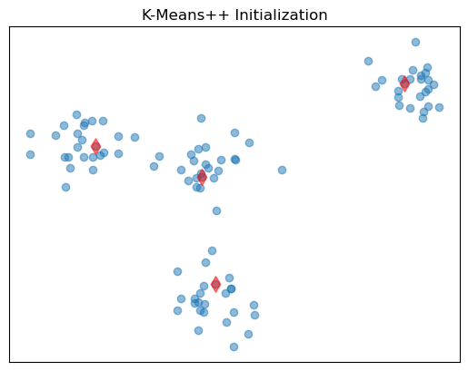
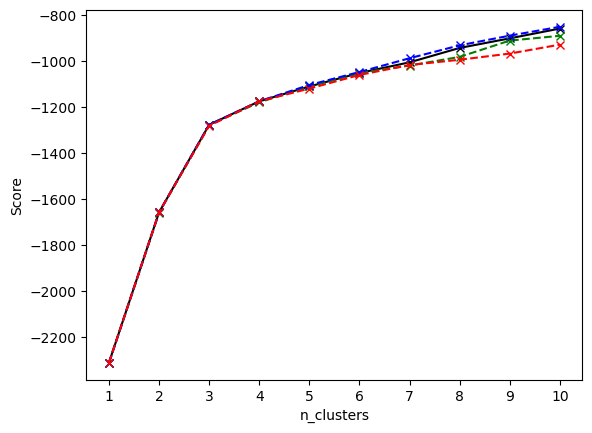
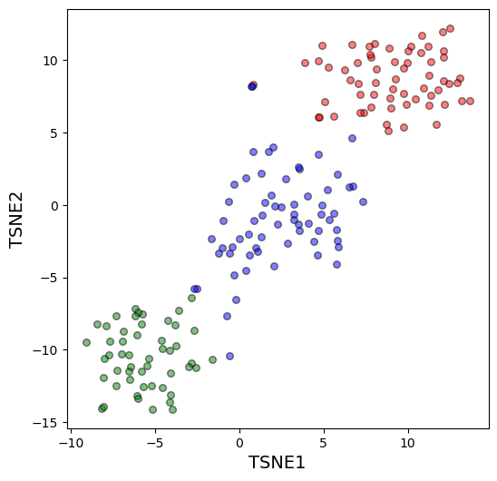
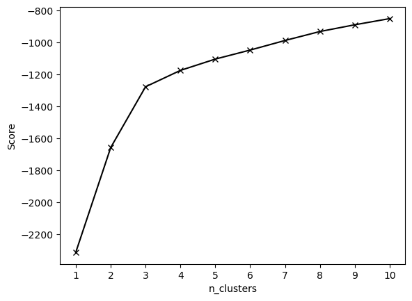

K-means Clustering#
import pandas as pd
import numpy as np
import matplotlib.pyplot as plt
from intro_Data_5 import *
import matplotlib.pyplot as plt
from sklearn.cluster import KMeans, kmeans_plusplus
1. Fake data with two features#
# Read the data
data = pd.read_csv('data/test_data_kmeans.csv')
data.head()
| Var1 | Var2 | |
|---|---|---|
| 0 | -9.482456 | 3.617581 |
| 1 | -7.290632 | 4.430300 |
| 2 | -0.088279 | -8.640152 |
| 3 | -7.275795 | 3.132772 |
| 4 | -8.252843 | 2.989601 |
plt.scatter(data['Var1'], data['Var2'], alpha = 1.)
<matplotlib.collections.PathCollection at 0x7ff6c4201c60>
# Do K-means with n_clusters=4
from sklearn.cluster import KMeans
X = data.values
km = KMeans(n_clusters=4, random_state=146, n_init=10) #K-means++ initialization is used by default
km.fit(X) # what is this doing?
KMeans(n_clusters=4, n_init=10, random_state=146)In a Jupyter environment, please rerun this cell to show the HTML representation or trust the notebook.
On GitHub, the HTML representation is unable to render, please try loading this page with nbviewer.org.
KMeans(n_clusters=4, n_init=10, random_state=146)
# get cluster centers
km.cluster_centers_
array([[-2.54799703, 2.22426148],
[ 8.38539231, 8.31476255],
[-2.24195689, -8.2834242 ],
[-9.20306789, 3.81787074]])
# get predicted groups
groups = km.predict(X)
groups
array([3, 3, 2, 3, 3, 3, 3, 3, 0, 1, 1, 2, 0, 2, 1, 3, 2, 1, 1, 2, 1, 1,
2, 1, 2, 3, 3, 0, 0, 2, 0, 1, 3, 2, 0, 3, 0, 0, 3, 0, 1, 0, 3, 2,
1, 1, 3, 2, 2, 3, 1, 2, 2, 3, 2, 2, 3, 2, 0, 1, 0, 0, 2, 2, 1, 2,
0, 0, 0, 2, 1, 2, 3, 3, 1, 2, 1, 3, 0, 0, 0, 0, 1, 0, 2, 2, 1, 1,
3, 3, 0, 1, 1, 0, 0, 3, 1, 1, 0, 3], dtype=int32)
# An alternative way
groups = km.labels_
groups
array([3, 3, 2, 3, 3, 3, 3, 3, 0, 1, 1, 2, 0, 2, 1, 3, 2, 1, 1, 2, 1, 1,
2, 1, 2, 3, 3, 0, 0, 2, 0, 1, 3, 2, 0, 3, 0, 0, 3, 0, 1, 0, 3, 2,
1, 1, 3, 2, 2, 3, 1, 2, 2, 3, 2, 2, 3, 2, 0, 1, 0, 0, 2, 2, 1, 2,
0, 0, 0, 2, 1, 2, 3, 3, 1, 2, 1, 3, 0, 0, 0, 0, 1, 0, 2, 2, 1, 1,
3, 3, 0, 1, 1, 0, 0, 3, 1, 1, 0, 3], dtype=int32)
plot_groups(X, groups, colors = get_colors(4))
(<Figure size 600x600 with 1 Axes>, <Axes: xlabel='x', ylabel='y'>)
km.score(X) # what is the score?
-360.83330039841513
It returns the negative of inertia. Inertia is the mean squared distance between each instance and its closest centroid, also called within cluster variance.
Tuning n_clusters using km.score()#
# Get scores for a range of n_clusters
scores=[]
k_range = np.arange(1,11)
for k in k_range:
km = KMeans(n_clusters=k, random_state=146, n_init=10)
km.fit(X)
scores.append(km.score(X))
scores
[-8028.849618957128,
-3296.1089936530784,
-946.2027826444734,
-360.83330039841513,
-314.3878257968411,
-276.7255467439338,
-240.59615125385656,
-210.03855457029013,
-186.03636024336996,
-168.33765515579287]
# Plot the score-n_clusters curve
plt.plot(k_range, scores, S)
plt.xlabel('n_clusters')
plt.xticks(k_range)
plt.ylabel('Score')
plt.show()
---------------------------------------------------------------------------
NameError Traceback (most recent call last)
Cell In[12], line 3
1 # Plot the score-n_clusters curve
----> 3 plt.plot(k_range, scores, S)
4 plt.xlabel('n_clusters')
5 plt.xticks(k_range)
NameError: name 'S' is not defined
Let’s take a look at this:
https://en.wikipedia.org/wiki/Elbow_method_(clustering)
# Visualize initialized centroids with K-Means++
centers_init, indices = kmeans_plusplus(X, n_clusters=4, random_state=200)
plt.scatter(X[:,0],X[:,1], alpha = 0.5)
plt.scatter(centers_init[:, 0], centers_init[:, 1], c="r", s=80, marker = 'd', alpha = 0.5)
plt.title("K-Means++ Initialization")
plt.xticks([])
plt.yticks([])
plt.show()

print(np.shape(centers_init), np.shape(indices))
print(indices)
print(centers_init)
(4, 2) (4,)
[26 50 69 78]
[[-8.49022399 3.67831587]
[ 7.94771132 8.56400121]
[-2.10869974 -7.02313428]
[-2.858053 1.2629213 ]]
2. Real data and combining dimension reduction methods#
# Read data
data = pd.read_csv('data/some_data.csv')
data.head()
| alcohol | malic_acid | ash | alcalinity_of_ash | magnesium | total_phenols | flavanoids | nonflavanoid_phenols | proanthocyanins | color_intensity | hue | od280/od315_of_diluted_wines | proline | |
|---|---|---|---|---|---|---|---|---|---|---|---|---|---|
| 0 | 14.23 | 1.71 | 2.43 | 15.6 | 127.0 | 2.80 | 3.06 | 0.28 | 2.29 | 5.64 | 1.04 | 3.92 | 1065.0 |
| 1 | 13.20 | 1.78 | 2.14 | 11.2 | 100.0 | 2.65 | 2.76 | 0.26 | 1.28 | 4.38 | 1.05 | 3.40 | 1050.0 |
| 2 | 13.16 | 2.36 | 2.67 | 18.6 | 101.0 | 2.80 | 3.24 | 0.30 | 2.81 | 5.68 | 1.03 | 3.17 | 1185.0 |
| 3 | 14.37 | 1.95 | 2.50 | 16.8 | 113.0 | 3.85 | 3.49 | 0.24 | 2.18 | 7.80 | 0.86 | 3.45 | 1480.0 |
| 4 | 13.24 | 2.59 | 2.87 | 21.0 | 118.0 | 2.80 | 2.69 | 0.39 | 1.82 | 4.32 | 1.04 | 2.93 | 735.0 |
# Do standard scaling (why?)
from sklearn.preprocessing import StandardScaler as SS
X = SS().fit_transform(data.values)
# Get scores for a range of n_clusters
scores0=[]
scores1=[]
scores2=[]
scores3=[]
k_range = np.arange(1,11)
for k in k_range:
km = KMeans(n_clusters=k, random_state=146, n_init=10, init = 'random')
km.fit(X)
km1 = KMeans(n_clusters=k, random_state=146, n_init=2, init = 'random')
km1.fit(X)
km2 = KMeans(n_clusters=k, random_state=146, n_init=10, init='k-means++')
km2.fit(X)
km3 = KMeans(n_clusters=k, random_state=146, n_init='auto', init='k-means++')
km3.fit(X)
scores0.append(km.score(X))
scores1.append(km1.score(X))
scores2.append(km2.score(X))
scores3.append(km3.score(X))
# Plot the score-n_clusters curve
plt.plot(k_range, scores0, '-xk')
plt.plot(k_range, scores1, '--xg')
plt.plot(k_range, scores2, '--xb')
plt.plot(k_range, scores3, '--xr')
plt.xlabel('n_clusters')
plt.xticks(k_range)
plt.ylabel('Score')
plt.show()

The `elbow’ it’s not too ‘clear’. Let’s try dimension reduction and take a look
from sklearn.decomposition import PCA
from sklearn.manifold import TSNE
pca = PCA(n_components=2)
pca_X = pca.fit_transform(X)
plt.scatter(pca_X[:,0], pca_X[:,1])
<matplotlib.collections.PathCollection at 0x7ff6bc027070>
tsne = TSNE(random_state = 146)
tsne_X = tsne.fit_transform(X)
plt.scatter(tsne_X[:,0], tsne_X[:,1])
<matplotlib.collections.PathCollection at 0x7ff6bbab53c0>
#Let's try 3 and shade in the points on PCA and tSNE
km = KMeans(n_clusters=3, n_init='auto')
km.fit(X)
KMeans(n_clusters=3, n_init='auto')In a Jupyter environment, please rerun this cell to show the HTML representation or trust the notebook.
On GitHub, the HTML representation is unable to render, please try loading this page with nbviewer.org.
KMeans(n_clusters=3, n_init='auto')
groups = km.predict(X)
groups
array([0, 0, 0, 0, 0, 0, 0, 0, 0, 0, 0, 0, 0, 0, 0, 0, 0, 0, 0, 0, 0, 0,
0, 0, 0, 0, 0, 0, 0, 0, 0, 0, 0, 0, 0, 0, 0, 0, 0, 0, 0, 0, 0, 0,
0, 0, 0, 0, 0, 0, 0, 0, 0, 0, 0, 0, 0, 0, 0, 1, 1, 2, 1, 1, 1, 1,
1, 1, 1, 1, 1, 1, 1, 0, 1, 1, 1, 1, 1, 1, 1, 1, 1, 2, 1, 1, 1, 1,
1, 1, 1, 1, 1, 1, 1, 0, 1, 1, 1, 1, 1, 1, 1, 1, 1, 1, 1, 1, 1, 1,
1, 1, 1, 1, 1, 1, 1, 1, 2, 1, 1, 0, 1, 1, 1, 1, 1, 1, 1, 1, 2, 2,
2, 2, 2, 2, 2, 2, 2, 2, 2, 2, 2, 2, 2, 2, 2, 2, 2, 2, 2, 2, 2, 2,
2, 2, 2, 2, 2, 2, 2, 2, 2, 2, 2, 2, 2, 2, 2, 2, 2, 2, 2, 2, 2, 2,
2, 2], dtype=int32)
km.cluster_centers_
array([[ 0.83523208, -0.30380968, 0.36470604, -0.61019129, 0.5775868 ,
0.88523736, 0.97781956, -0.56208965, 0.58028658, 0.17106348,
0.47398365, 0.77924711, 1.12518529],
[-0.92607185, -0.39404154, -0.49451676, 0.17060184, -0.49171185,
-0.07598265, 0.02081257, -0.03353357, 0.0582655 , -0.90191402,
0.46180361, 0.27076419, -0.75384618],
[ 0.16490746, 0.87154706, 0.18689833, 0.52436746, -0.07547277,
-0.97933029, -1.21524764, 0.72606354, -0.77970639, 0.94153874,
-1.16478865, -1.29241163, -0.40708796]])
# Plot the clusters and the centroids (using first two PCs of PCA)
fig,ax = plot_groups(pca_X, groups, colors = ['red','blue','green'], labels = ['PC1','PC2'], alpha = 0.5)
plot_groups(pca.fit_transform(km.cluster_centers_), np.unique(groups), colors = ['grey']*3, ax=ax, s= 100,
alpha = 1)
(<Figure size 600x600 with 1 Axes>, <Axes: xlabel='x', ylabel='y'>)
# Plot the clusters using TSNE
fig, ax = plot_groups(tsne_X, groups, colors = ['red','blue','green'], labels = ['TSNE1','TSNE2'], alpha = 0.5)
# plt.xticks([])
# plt.yticks([])

Actually we do know how many groups there are and which points go in which group…let’s see if they match the clusters
groups
array([0, 0, 0, 0, 0, 0, 0, 0, 0, 0, 0, 0, 0, 0, 0, 0, 0, 0, 0, 0, 0, 0,
0, 0, 0, 0, 0, 0, 0, 0, 0, 0, 0, 0, 0, 0, 0, 0, 0, 0, 0, 0, 0, 0,
0, 0, 0, 0, 0, 0, 0, 0, 0, 0, 0, 0, 0, 0, 0, 1, 1, 2, 1, 1, 1, 1,
1, 1, 1, 1, 1, 1, 1, 0, 1, 1, 1, 1, 1, 1, 1, 1, 1, 2, 1, 1, 1, 1,
1, 1, 1, 1, 1, 1, 1, 0, 1, 1, 1, 1, 1, 1, 1, 1, 1, 1, 1, 1, 1, 1,
1, 1, 1, 1, 1, 1, 1, 1, 2, 1, 1, 0, 1, 1, 1, 1, 1, 1, 1, 1, 2, 2,
2, 2, 2, 2, 2, 2, 2, 2, 2, 2, 2, 2, 2, 2, 2, 2, 2, 2, 2, 2, 2, 2,
2, 2, 2, 2, 2, 2, 2, 2, 2, 2, 2, 2, 2, 2, 2, 2, 2, 2, 2, 2, 2, 2,
2, 2], dtype=int32)
real_groups = pd.read_csv('data/Metadata.csv', index_col=0)
real_groups = real_groups['0'].values
real_groups
array([0, 0, 0, 0, 0, 0, 0, 0, 0, 0, 0, 0, 0, 0, 0, 0, 0, 0, 0, 0, 0, 0,
0, 0, 0, 0, 0, 0, 0, 0, 0, 0, 0, 0, 0, 0, 0, 0, 0, 0, 0, 0, 0, 0,
0, 0, 0, 0, 0, 0, 0, 0, 0, 0, 0, 0, 0, 0, 0, 1, 1, 1, 1, 1, 1, 1,
1, 1, 1, 1, 1, 1, 1, 1, 1, 1, 1, 1, 1, 1, 1, 1, 1, 1, 1, 1, 1, 1,
1, 1, 1, 1, 1, 1, 1, 1, 1, 1, 1, 1, 1, 1, 1, 1, 1, 1, 1, 1, 1, 1,
1, 1, 1, 1, 1, 1, 1, 1, 1, 1, 1, 1, 1, 1, 1, 1, 1, 1, 1, 1, 2, 2,
2, 2, 2, 2, 2, 2, 2, 2, 2, 2, 2, 2, 2, 2, 2, 2, 2, 2, 2, 2, 2, 2,
2, 2, 2, 2, 2, 2, 2, 2, 2, 2, 2, 2, 2, 2, 2, 2, 2, 2, 2, 2, 2, 2,
2, 2])
conf_matrix, accuracy = compare_classes(real_groups, groups)
conf_matrix
Anything wrong?
# The labels of groups 1 and 2 are reversed. Let's switch them over.
#temp = groups == 0
change2 = groups == 2
change1 = groups == 1
#groups[temp] = 2
groups[change2] = 1
groups[change1] = 2
conf_matrix, accuracy = compare_classes(real_groups, groups)
conf_matrix
Test accuracy = 0.35
| Predicted | 0 | 1 | 2 |
|---|---|---|---|
| Actual | |||
| 0 | 59 | 0 | 0 |
| 1 | 3 | 3 | 65 |
| 2 | 0 | 48 | 0 |
The above is just to show that the groups in unsupervised learning are usually NOT pre-defined.
In practice, we cannot compute confusion matrix for unsupervised learning, since we have no idea what the actual labels are for the groups that the data points belong to.
The DNA dataset#
full_data = pd.read_csv('data/DNA_full_data.csv')
full_data.head()
| AAAA | AAAC | AAAT | AAAG | AACA | AACC | AACT | AACG | AATA | AATC | ... | GGCT | GGCG | GGTA | GGTC | GGTT | GGTG | GGGA | GGGC | GGGT | GGGG | |
|---|---|---|---|---|---|---|---|---|---|---|---|---|---|---|---|---|---|---|---|---|---|
| 0 | 0.003590 | 0.003675 | 0.004523 | 0.002541 | 0.005437 | 0.002962 | 0.003883 | 0.004101 | 0.005245 | 0.005914 | ... | 0.002811 | 0.003309 | 0.002535 | 0.003914 | 0.002962 | 0.004354 | 0.002910 | 0.001840 | 0.002707 | 0.001785 |
| 1 | 0.003195 | 0.003714 | 0.003834 | 0.002509 | 0.005379 | 0.003127 | 0.003652 | 0.004227 | 0.004291 | 0.006100 | ... | 0.002825 | 0.003506 | 0.002371 | 0.004111 | 0.003127 | 0.004668 | 0.003233 | 0.001972 | 0.002921 | 0.001995 |
| 2 | 0.003269 | 0.004386 | 0.005131 | 0.002317 | 0.006207 | 0.003393 | 0.003807 | 0.003434 | 0.006910 | 0.007365 | ... | 0.001945 | 0.002441 | 0.002317 | 0.003393 | 0.003393 | 0.004345 | 0.002897 | 0.001200 | 0.002938 | 0.002441 |
| 3 | 0.003142 | 0.004164 | 0.003300 | 0.001964 | 0.006442 | 0.002907 | 0.004085 | 0.004557 | 0.005264 | 0.006285 | ... | 0.002121 | 0.003614 | 0.001493 | 0.004399 | 0.002907 | 0.003849 | 0.002514 | 0.002043 | 0.002593 | 0.002121 |
| 4 | 0.004763 | 0.003297 | 0.006137 | 0.002473 | 0.005404 | 0.003114 | 0.003297 | 0.003252 | 0.007007 | 0.006183 | ... | 0.002473 | 0.002977 | 0.002107 | 0.003114 | 0.003114 | 0.004488 | 0.002244 | 0.002107 | 0.002610 | 0.002244 |
5 rows × 256 columns
#pca_Full = pca.fit_transform(SS().fit_transform(full_data.values))
pca_Full = pca.fit_transform(full_data.values)
plt.scatter(pca_Full[:,0], pca_Full[:,1])
<matplotlib.collections.PathCollection at 0x7ff6f82c5e40>
# Get scores for a range of n_clusters
scorespca=[]
k_range = np.arange(1,11)
for k in k_range:
km = KMeans(n_clusters=k, random_state=146, n_init=10)
km.fit(X)
scorespca.append(km.score(X))
# Plot the score-n_clusters curve
plt.plot(k_range, scorespca, '-xk')
plt.xlabel('n_clusters')
plt.xticks(k_range)
plt.ylabel('Score')
plt.show()

km = KMeans(n_clusters = 3, random_state = 146, n_init=10)
km.fit(full_data.values)
full_predictions = km.predict(full_data.values)
full_predictions
km.labels_
#Let's just look at the data labels
labels = pd.read_csv('data/DNA_labels.csv', index_col = 0)
labels
np.unique(full_predictions)
conf_matrix, accuracy = compare_classes(labels['Sequence_ID'].values, full_predictions)
conf_matrix
#This tells us which sequences should actually go together
mapping = {0:'Halo', 1:'Helico', 2:'Taq'}
new_full = pd.Series(full_predictions).apply(lambda x: mapping[x] ).values
new_full
conf_matrix, accuracy = compare_classes(labels['Sequence_ID'].values, new_full)
conf_matrix